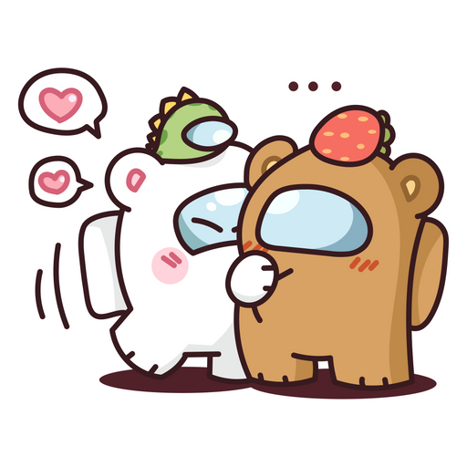

MIS CANCIONES
Estoy invitándolos a mi zona de confort, la zona Lolu, mis letras que me ayudan a desahogar.

Nohaynombrejaja
[Parte 1]
Mientras pasa Octubre
Los recuerdos me llevan a él
Sentir el roce, sentir los besos
Hacen que me sienta peor
Me traicionaste con saña
Como un cuchillo que corta sin piedad
No digas que tuve la culpa
Porque acá sabemos que vos, vos, vos, fuiste el peor
[Estribillo]
Fui solo un trofeo
En tu juego maestro
Y jugabas con fuego
Me siento ahogada
Con lágrimas de rabia
Y mi corazón va a explotar por sufrir
Quiero que sientas el dolor
Que me causaste sin piedad
Quiero que empieces a arder y sufras de una vez
No te importa nada
Quiero borrar tu marca
Y empezar a vivir sin ti
[Parte 2]
Ten cuidado, camina lento
No quiero empezar a correr
Pienso que hay algo bueno en vos
Pero es veneno en tu amor
[Estribillo]
Fui solo un trofeo
En tu juego maestro
Y jugabas con fuego
Me siento ahogada
Con lágrimas de rabia
Y mi corazón va a explotar por sufrir
Quiero que sientas el dolor
Que me causaste sin piedad
Quiero que empieces a arder y sufras de una vez
No te importa nada
Quiero borrar tu marca
Y empezar a vivir
[Puente]
Vuelve a mi, pero no te quedes
Sáname el dolor, pero no me cures
Así que llévame lejos y perdámonos
En el fuego que nos consumió